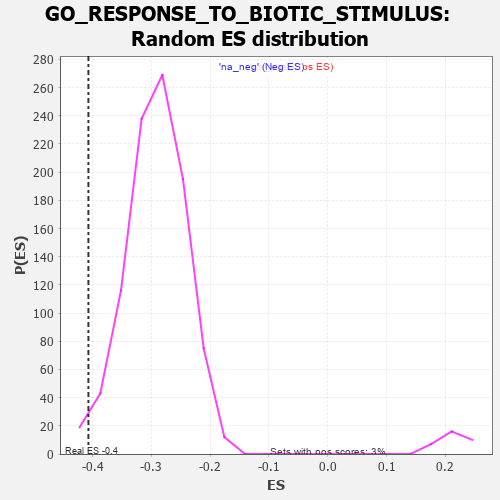

| | | Dataset | 7d |
| Phenotype | NoPhenotypeAvailable |
| Upregulated in class | na_neg |
| GeneSet | GO_RESPONSE_TO_BIOTIC_STIMULUS |
| Enrichment Score (ES) | -0.40706566 |
| Normalized Enrichment Score (NES) | -1.3952981 |
| Nominal p-value | 0.016546018 |
| FDR q-value | 0.3393264 |
| FWER p-Value | 1.0 |
Table: GSEA Results Summary
 Fig 1: Enrichment plot: GO_RESPONSE_TO_BIOTIC_STIMULUS
Fig 1: Enrichment plot: GO_RESPONSE_TO_BIOTIC_STIMULUS
Profile of the Running ES Score & Positions of GeneSet Members on the Rank Ordered List
| PROBE | GENE SYMBOL | GENE_TITLE | RANK IN GENE LIST | RANK METRIC SCORE | RUNNING ES | CORE ENRICHMENT | | 1 | DCLK1 | | | 55 | 2.532 | 0.0154 | No |
| 2 | UBE2K | | | 94 | 1.739 | 0.0260 | No |
| 3 | BCL3 | | | 202 | 1.047 | 0.0215 | No |
| 4 | DCST1 | | | 237 | 0.959 | 0.0256 | No |
| 5 | CNOT7 | | | 348 | 0.750 | 0.0181 | No |
| 6 | MLH1 | | | 423 | 0.679 | 0.0146 | No |
| 7 | MX1 | | | 578 | 0.604 | 0.0002 | No |
| 8 | XRCC6 | | | 694 | 0.560 | -0.0097 | No |
| 9 | TTC4 | | | 873 | 0.513 | -0.0280 | No |
| 10 | PYGL | | | 882 | 0.510 | -0.0245 | No |
| 11 | HMGB2 | | | 892 | 0.507 | -0.0212 | No |
| 12 | HDAC5 | | | 900 | 0.506 | -0.0176 | No |
| 13 | MATR3 | | | 937 | 0.498 | -0.0178 | No |
| 14 | PDCD4 | | | 941 | 0.497 | -0.0138 | No |
| 15 | CTR9 | | | 964 | 0.492 | -0.0122 | No |
| 16 | ATG10 | | | 970 | 0.490 | -0.0085 | No |
| 17 | HMGB4 | | | 1008 | 0.482 | -0.0090 | No |
| 18 | AKT1 | | | 1040 | 0.476 | -0.0088 | No |
| 19 | YAP1 | | | 1041 | 0.475 | -0.0045 | No |
| 20 | MEF2C | | | 1054 | 0.473 | -0.0019 | No |
| 21 | NCBP3 | | | 1087 | 0.466 | -0.0019 | No |
| 22 | SRC | | | 1128 | 0.459 | -0.0029 | No |
| 23 | PSMD7 | | | 1152 | 0.454 | -0.0019 | No |
| 24 | PSMD2 | | | 1181 | 0.450 | -0.0015 | No |
| 25 | CDC73 | | | 1265 | 0.436 | -0.0083 | No |
| 26 | NOCT | | | 1402 | 0.409 | -0.0221 | No |
| 27 | EXOC1 | | | 1403 | 0.409 | -0.0185 | No |
| 28 | DACH1 | | | 1471 | 0.395 | -0.0236 | No |
| 29 | LIAS | | | 1524 | 0.387 | -0.0269 | No |
| 30 | PAF1 | | | 1588 | 0.376 | -0.0316 | No |
| 31 | CDK4 | | | 1626 | 0.370 | -0.0331 | No |
| 32 | PSMD4 | | | 1811 | 0.335 | -0.0538 | No |
| 33 | ABR | | | 1812 | 0.335 | -0.0508 | No |
| 34 | FMR1 | | | 1816 | 0.334 | -0.0483 | No |
| 35 | TRIM5 | | | 1852 | 0.327 | -0.0499 | No |
| 36 | PSMD6 | | | 1858 | 0.326 | -0.0476 | No |
| 37 | PAK3 | | | 1889 | 0.322 | -0.0486 | No |
| 38 | CCR4 | | | 1959 | 0.312 | -0.0547 | No |
| 39 | RAF1 | | | 2011 | 0.303 | -0.0586 | No |
| 40 | IRF4 | | | 2054 | 0.298 | -0.0614 | No |
| 41 | PSME4 | | | 2143 | 0.285 | -0.0701 | No |
| 42 | SYK | | | 2186 | 0.278 | -0.0731 | No |
| 43 | C1QBP | | | 2189 | 0.278 | -0.0709 | No |
| 44 | PSMF1 | | | 2251 | 0.268 | -0.0763 | No |
| 45 | MIF | | | 2357 | 0.252 | -0.0876 | No |
| 46 | SIN3A | | | 2361 | 0.251 | -0.0858 | No |
| 47 | OTUD5 | | | 2385 | 0.247 | -0.0865 | No |
| 48 | TLR1 | | | 2517 | 0.224 | -0.1014 | No |
| 49 | PSMD5 | | | 2560 | 0.218 | -0.1049 | No |
| 50 | PDE12 | | | 2608 | 0.211 | -0.1090 | No |
| 51 | WIPI2 | | | 2618 | 0.210 | -0.1083 | No |
| 52 | PUM2 | | | 2627 | 0.209 | -0.1075 | No |
| 53 | ABCF3 | | | 2628 | 0.209 | -0.1057 | No |
| 54 | WDR83 | | | 2669 | 0.203 | -0.1090 | No |
| 55 | MUS81 | | | 2673 | 0.202 | -0.1076 | No |
| 56 | SASH1 | | | 2682 | 0.201 | -0.1068 | No |
| 57 | CLPB | | | 2706 | 0.198 | -0.1080 | No |
| 58 | PHB2 | | | 2712 | 0.197 | -0.1069 | No |
| 59 | DDX1 | | | 2718 | 0.196 | -0.1058 | No |
| 60 | CUL1 | | | 2735 | 0.193 | -0.1062 | No |
| 61 | FER | | | 2803 | 0.183 | -0.1132 | No |
| 62 | BECN1 | | | 2828 | 0.179 | -0.1147 | No |
| 63 | DAPK3 | | | 2880 | 0.169 | -0.1197 | No |
| 64 | FGFR2 | | | 2895 | 0.167 | -0.1201 | No |
| 65 | BTK | | | 2958 | 0.156 | -0.1266 | No |
| 66 | RRP1B | | | 2986 | 0.152 | -0.1288 | No |
| 67 | ABCE1 | | | 3051 | 0.143 | -0.1357 | No |
| 68 | TIGAR | | | 3091 | 0.138 | -0.1395 | No |
| 69 | AIMP1 | | | 3105 | 0.136 | -0.1400 | No |
| 70 | GPX1 | | | 3109 | 0.135 | -0.1392 | No |
| 71 | GCH1 | | | 3166 | 0.127 | -0.1453 | No |
| 72 | PSMD9 | | | 3179 | 0.125 | -0.1457 | No |
| 73 | AP1G1 | | | 3210 | 0.121 | -0.1485 | No |
| 74 | EME1 | | | 3246 | 0.114 | -0.1520 | No |
| 75 | TAB1 | | | 3351 | 0.097 | -0.1645 | No |
| 76 | DDX3X | | | 3388 | 0.091 | -0.1683 | No |
| 77 | MED1 | | | 3405 | 0.089 | -0.1696 | No |
| 78 | TRIL | | | 3428 | 0.087 | -0.1716 | No |
| 79 | SARM1 | | | 3432 | 0.086 | -0.1713 | No |
| 80 | FES | | | 3501 | 0.077 | -0.1793 | No |
| 81 | PQBP1 | | | 3526 | 0.072 | -0.1818 | No |
| 82 | MAPK3 | | | 3589 | 0.062 | -0.1892 | No |
| 83 | SKP1 | | | 3663 | 0.049 | -0.1982 | No |
| 84 | CD180 | | | 3686 | 0.046 | -0.2006 | No |
| 85 | DHX9 | | | 3693 | 0.044 | -0.2010 | No |
| 86 | HSF1 | | | 3718 | 0.039 | -0.2037 | No |
| 87 | SYT11 | | | 3732 | 0.036 | -0.2051 | No |
| 88 | SBNO2 | | | 3774 | 0.032 | -0.2101 | No |
| 89 | IFIH1 | | | 3919 | 0.006 | -0.2285 | No |
| 90 | DDX58 | | | 3998 | -0.007 | -0.2385 | No |
| 91 | ECSIT | | | 4002 | -0.008 | -0.2388 | No |
| 92 | ATG5 | | | 4051 | -0.016 | -0.2449 | No |
| 93 | CSF1 | | | 4074 | -0.019 | -0.2475 | No |
| 94 | PDE4B | | | 4089 | -0.022 | -0.2491 | No |
| 95 | CHID1 | | | 4099 | -0.023 | -0.2501 | No |
| 96 | ABL1 | | | 4125 | -0.027 | -0.2531 | No |
| 97 | CRK | | | 4139 | -0.031 | -0.2545 | No |
| 98 | DDX17 | | | 4161 | -0.035 | -0.2568 | No |
| 99 | GFI1 | | | 4168 | -0.037 | -0.2573 | No |
| 100 | FMO1 | | | 4181 | -0.038 | -0.2585 | No |
| 101 | GGT7 | | | 4200 | -0.041 | -0.2604 | No |
| 102 | GBF1 | | | 4215 | -0.044 | -0.2619 | No |
| 103 | PSME3 | | | 4280 | -0.056 | -0.2696 | No |
| 104 | AUP1 | | | 4315 | -0.062 | -0.2734 | No |
| 105 | ROMO1 | | | 4320 | -0.063 | -0.2734 | No |
| 106 | SETD2 | | | 4443 | -0.084 | -0.2883 | No |
| 107 | CDC37 | | | 4446 | -0.084 | -0.2879 | No |
| 108 | TMCO1 | | | 4451 | -0.085 | -0.2876 | No |
| 109 | NPC2 | | | 4498 | -0.093 | -0.2927 | No |
| 110 | NUB1 | | | 4604 | -0.119 | -0.3052 | No |
| 111 | SMC1A | | | 4609 | -0.120 | -0.3046 | No |
| 112 | GATA3 | | | 4614 | -0.120 | -0.3041 | No |
| 113 | CNPY3 | | | 4758 | -0.149 | -0.3211 | No |
| 114 | RAB14 | | | 4784 | -0.155 | -0.3230 | No |
| 115 | PIM2 | | | 4789 | -0.155 | -0.3221 | No |
| 116 | SRPK2 | | | 4790 | -0.155 | -0.3207 | No |
| 117 | PPM1D | | | 4805 | -0.158 | -0.3211 | No |
| 118 | CLU | | | 4889 | -0.174 | -0.3303 | No |
| 119 | CASP1 | | | 4932 | -0.185 | -0.3340 | No |
| 120 | EP300 | | | 4941 | -0.186 | -0.3334 | No |
| 121 | XRCC5 | | | 4946 | -0.187 | -0.3323 | No |
| 122 | CHMP5 | | | 4952 | -0.188 | -0.3312 | No |
| 123 | PRKDC | | | 4955 | -0.189 | -0.3298 | No |
| 124 | PDPK1 | | | 5043 | -0.207 | -0.3392 | No |
| 125 | DDX41 | | | 5058 | -0.211 | -0.3391 | No |
| 126 | FLNB | | | 5082 | -0.220 | -0.3401 | No |
| 127 | DRD2 | | | 5088 | -0.221 | -0.3388 | No |
| 128 | IPO7 | | | 5142 | -0.236 | -0.3435 | No |
| 129 | SMO | | | 5195 | -0.247 | -0.3480 | No |
| 130 | TMF1 | | | 5225 | -0.251 | -0.3495 | No |
| 131 | DDX21 | | | 5231 | -0.252 | -0.3479 | No |
| 132 | FZD5 | | | 5386 | -0.292 | -0.3651 | No |
| 133 | PRDX3 | | | 5389 | -0.293 | -0.3628 | No |
| 134 | PPM1B | | | 5422 | -0.300 | -0.3642 | No |
| 135 | LYST | | | 5448 | -0.307 | -0.3647 | No |
| 136 | FRK | | | 5451 | -0.307 | -0.3623 | No |
| 137 | FABP4 | | | 5509 | -0.322 | -0.3667 | No |
| 138 | PCBP2 | | | 5539 | -0.331 | -0.3675 | No |
| 139 | PSMD1 | | | 5674 | -0.367 | -0.3815 | No |
| 140 | CASP8 | | | 5678 | -0.369 | -0.3786 | No |
| 141 | MX2 | | | 5745 | -0.390 | -0.3836 | No |
| 142 | TLR2 | | | 5761 | -0.395 | -0.3821 | No |
| 143 | VAMP7 | | | 5777 | -0.399 | -0.3805 | No |
| 144 | LAMP1 | | | 5796 | -0.404 | -0.3792 | No |
| 145 | TKFC | | | 5854 | -0.419 | -0.3828 | No |
| 146 | ATG7 | | | 5858 | -0.420 | -0.3794 | No |
| 147 | PRDM1 | | | 5956 | -0.457 | -0.3879 | No |
| 148 | XBP1 | | | 6011 | -0.475 | -0.3906 | No |
| 149 | VAMP3 | | | 6043 | -0.487 | -0.3903 | No |
| 150 | EVL | | | 6052 | -0.490 | -0.3869 | No |
| 151 | EGR1 | | | 6165 | -0.527 | -0.3967 | No |
| 152 | CDC42 | | | 6236 | -0.548 | -0.4008 | No |
| 153 | XPR1 | | | 6250 | -0.555 | -0.3976 | No |
| 154 | NCAM1 | | | 6318 | -0.582 | -0.4010 | No |
| 155 | BIRC3 | | | 6366 | -0.603 | -0.4017 | Yes |
| 156 | ISG15 | | | 6385 | -0.608 | -0.3986 | Yes |
| 157 | MBL2 | | | 6411 | -0.623 | -0.3963 | Yes |
| 158 | RAB43 | | | 6419 | -0.628 | -0.3916 | Yes |
| 159 | MALT1 | | | 6432 | -0.634 | -0.3876 | Yes |
| 160 | SRR | | | 6464 | -0.646 | -0.3858 | Yes |
| 161 | OTOP1 | | | 6562 | -0.690 | -0.3922 | Yes |
| 162 | ARF1 | | | 6583 | -0.701 | -0.3885 | Yes |
| 163 | CUBN | | | 6624 | -0.727 | -0.3872 | Yes |
| 164 | PAK1 | | | 6691 | -0.757 | -0.3890 | Yes |
| 165 | GSK3B | | | 6719 | -0.768 | -0.3856 | Yes |
| 166 | KYNU | | | 6802 | -0.816 | -0.3889 | Yes |
| 167 | ADAM9 | | | 6808 | -0.819 | -0.3823 | Yes |
| 168 | LYAR | | | 6828 | -0.830 | -0.3774 | Yes |
| 169 | LRP8 | | | 6931 | -0.889 | -0.3826 | Yes |
| 170 | SNX3 | | | 6934 | -0.893 | -0.3750 | Yes |
| 171 | GHSR | | | 6937 | -0.894 | -0.3673 | Yes |
| 172 | RAB1A | | | 7096 | -0.993 | -0.3788 | Yes |
| 173 | UFD1 | | | 7157 | -1.040 | -0.3773 | Yes |
| 174 | COTL1 | | | 7166 | -1.046 | -0.3690 | Yes |
| 175 | PTPRJ | | | 7180 | -1.054 | -0.3613 | Yes |
| 176 | TSPO | | | 7194 | -1.065 | -0.3535 | Yes |
| 177 | MPEG1 | | | 7210 | -1.083 | -0.3459 | Yes |
| 178 | ABCA1 | | | 7243 | -1.113 | -0.3401 | Yes |
| 179 | GRN | | | 7319 | -1.194 | -0.3391 | Yes |
| 180 | CYLD | | | 7333 | -1.206 | -0.3301 | Yes |
| 181 | PLAC8 | | | 7355 | -1.223 | -0.3219 | Yes |
| 182 | WDR35 | | | 7357 | -1.225 | -0.3112 | Yes |
| 183 | KMO | | | 7432 | -1.308 | -0.3091 | Yes |
| 184 | GGT1 | | | 7447 | -1.329 | -0.2991 | Yes |
| 185 | SHPK | | | 7469 | -1.360 | -0.2897 | Yes |
| 186 | LITAF | | | 7572 | -1.511 | -0.2894 | Yes |
| 187 | NLRC3 | | | 7574 | -1.515 | -0.2761 | Yes |
| 188 | ELF4 | | | 7600 | -1.551 | -0.2656 | Yes |
| 189 | HMCN1 | | | 7713 | -1.801 | -0.2640 | Yes |
| 190 | CASP3 | | | 7747 | -1.902 | -0.2513 | Yes |
| 191 | PDE4D | | | 7764 | -1.944 | -0.2361 | Yes |
| 192 | MUC2 | | | 7802 | -2.066 | -0.2226 | Yes |
| 193 | TRAF6 | | | 7818 | -2.157 | -0.2053 | Yes |
| 194 | FYN | | | 7881 | -2.622 | -0.1900 | Yes |
| 195 | TRAF3 | | | 7886 | -2.695 | -0.1666 | Yes |
| 196 | MUC19 | | | 7900 | -2.797 | -0.1435 | Yes |
| 197 | PSMD3 | | | 7907 | -2.887 | -0.1186 | Yes |
| 198 | PSMD8 | | | 7931 | -3.286 | -0.0924 | Yes |
| 199 | MRC1 | | | 7940 | -3.475 | -0.0625 | Yes |
| 200 | XIAP | | | 7947 | -3.696 | -0.0305 | Yes |
| 201 | DAPK1 | | | 7950 | -3.767 | 0.0027 | Yes |
Table: GSEA details [plain text format]

Fig 2: GO_RESPONSE_TO_BIOTIC_STIMULUS: Random ES distribution
Gene set null distribution of ES for GO_RESPONSE_TO_BIOTIC_STIMULUS